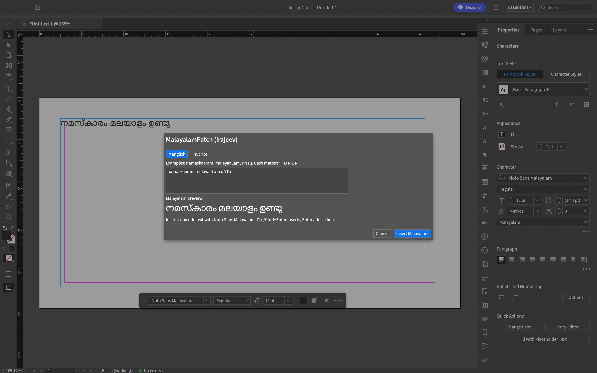

INDD file will not open
Solution: Launch DesignCraft iRajeev, choose File → Open and select the .indd or .indt file. The importer works locally inside the app. Save your work as .designcraft or export .idml.
Open InDesign files directly in DesignCraft. Fix specific Malayalam font boxes and spacing problems. Type Malayalam using Manglish or InScript.
This installs a separate app called DesignCraft iRajeev. It is an independent, experimental build for macOS, Windows and Linux.
Detecting your operating system and processor…
We select the matching installer when your browser supplies the details. If it hides your processor, choose it below. You can always change the selection.
Checking available installers…
Only published builds are offered here.
A matching download starts after a five-second countdown. Your browser may require a click. On Mac, check Apple menu → About This Mac if the processor is unknown.
Release notes, other packages and checksumsSolution: Launch DesignCraft iRajeev, choose File → Open and select the .indd or .indt file. The importer works locally inside the app. Save your work as .designcraft or export .idml.
Cause addressed: Some legacy FML fonts lack glyphs for nonbreaking separators and curly quotation marks. The missing glyphs appear as boxes and add unwanted width.


Actual app renders of a diagnostic glyph sample, not a document excerpt. Both use the same text, font and size.
Solution: The patch uses the font’s existing separator and quotation-mark glyphs for display. It preserves your original document text and existing “ണ്ട” conjuncts. Install your matching licensed FML fonts; they are not included.
This addresses those specific missing characters. It does not fix every spacing issue, convert old FML text to Unicode, or guarantee the same page breaks as InDesign.
The new option is Type → MalayalamPatch (irajeev)….

| Mode | Example input | Result |
|---|---|---|
| Manglish | namaskaaram | നമസ്കാരം |
| Manglish | malayaaLam | മലയാളം |
| Manglish | uNTu | ഉണ്ടു |
| InScript | vcmdkejx | നമസ്കാരം |
Manglish is case-sensitive: T, D, N, L and R have distinct mappings. It follows fixed spellings rather than predictive suggestions. InScript uses Malayalam keyboard positions.
Noto Sans Malayalam is bundled for new Unicode text. Typing works offline; Typeit! is not required. Existing legacy FML text stays unchanged.
Choose your operating system above to see the installation steps.
These independent installers are unsigned / not notarized. Your system may show a publisher warning. The installer does not turn off security settings.
To uninstall: remove the app on macOS; use Installed apps on Windows; remove irajeev-designcraft-indd on Debian/Ubuntu.